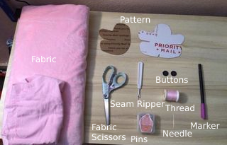

How to Tutorial
It is always fun having a friend to sew with! With this sewing tutorial, you will learn how to make your very own frog companion you can use for sewing. Personally, I use mine as a needle holder when I sew but, you can use this little buddy for anything. This tutorial is beginner friendly as it is really easy making one of these little guys. Read the rest to find out how to make your very own frog companion!
Materials and Pattern

- Half a yard of fabric ( You can mix and match your fabrics)
- Pattern Cutout
- Two buttons( I used some spare black ones.
Feel free to use any kind) - Seam Ripper( Always good to have one in the beginning)
- Fabric Scissors
- Any color thread(Have the thread the same color as your fabric)
- Pins
- Needle
- Marker
- Stuffing
Instructions
STEP 1:
After gathering all the necessary materials, this project, trace the pattern onto the piece of fabric. Remember, you should have three parts in total.
In this tutorial, I used two different types of fabric to create a contrast between the body and side parts. For the body I used regular cotton and for the sides I used minky to get that nice plush texture. Use whatever fabric you would like. You can even use some old clothes and recycle that fabric to make your frog!
STEP 2:
After tracing your pieces, cut them out using your fabric scissors. The picture above shows what it should look like after cutting them out.
STEP 3:
After laying them out, take one of the side pieces and place it on top of the body piece where they match up. Once lined up, hold the pieces of fabric in place and stick the pins so that the pieces are stuck together. The image above shows how the fabrics should look like after placing the pins in place. It is not necessary to have this much pins but I like the stablity of them.
STEP 4:
In this step you can either hand sew the pieces together or use a sewing machine. For this example I am using my trusty sewing machine in order to sew the pieces together. However, it is totally up to you if you want to hand sew your project together. I recommend either a backstitch or a running stitch if you are handsewing. If you are using a machine, make sure to take the pins out as you go to prevent breaking your sewing machine. I speak from expereince.
STEP 5:
After finishing sewing one side; line up the other side with the body and repeat the process again. Make sure to leave a opening where the frog butt should be. This is where we are going to turn it inside out and put stuffing in.
STEP 6:
Once sewing both sides to the body, sew the middle part where the sides pieces touch together as shown above.
STEP 1:
After sewing the middle part together turn the plush inside out so that all the stich marks are inside.
STEP 1:
Gather a handful of stuffing for your plush. Depending how big you made the plush the more stuffing you will need.
STEP 1:
Carefully fill the plush with stuffing. Start with the arms and legs of the plush and ensure that they are well stuffed. Afterwards, began filling the rest of the body with the stuffing and make sure not to over stuff it as you still need to finish sewing the rest of the body up.
STEP 1:
It is always fun having a friend to sew with! With this sewing tutorial, you will learn how to make your very own frog companion you can use for sewing. Personally, I use mine as a needle holder when I sew but, you can use this little buddy for anything. This tutorial is beginner friendly as it is really easy making one of these little guys. Read the rest to find out how to make your very own frog companion!
STEP 1:
Once stuffed, thread your needle with the string and close the remaining gap with a ladder stitch. A ladder stitch will ensure that the thread is cover once you pull on it to close the hole.
STEP 1:
Hurray! You now have a frog companion of your own making! Make sure to treat them well or do what I do and use them to hold your needles.